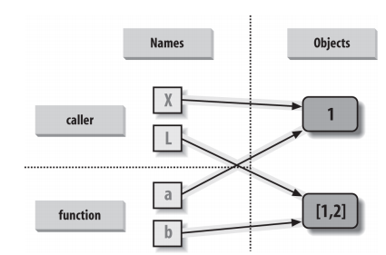

Functions - solutions#
Download exercises zip#
Introduction#
References:
A function takes some parameters and uses them to produce or report some result.
In this notebook we will see how to define functions to reuse code, and talk about the scope of variables
References
Thinking in Python, Chapter 6, Fruitful functions NOTE: in the book they use the weird term ‘fruitful functions’ for those functions which RETURN a value (mind you, RETURN a value, which is different from PRINTing it), and use also the term ‘void functions’ for functions which do not return anything but have some effect like PRINTing to screen. Please ignore these terms.
What to do#
unzip exercises in a folder, you should get something like this:
-jupman.py
-exercises
|- functions
|- functions.ipynb
|- functions-sol.ipynb
WARNING: to correctly visualize the notebook, it MUST be in an unzipped folder !
open Jupyter Notebook from that folder. Two things should open, first a console and then browser. The browser should show a file list: navigate the list and open the notebook
functions/functions.ipynbGo on reading that notebook, and follow instuctions inside.
Shortcut keys:
to execute Python code inside a Jupyter cell, press
Control + Enterto execute Python code inside a Jupyter cell AND select next cell, press
Shift + Enterto execute Python code inside a Jupyter cell AND a create a new cell aftwerwards, press
Alt + EnterIf the notebooks look stuck, try to select
Kernel -> Restart
What is a function ?#
A function is a block of code that has a name and that performs a task. A function can be thought of as a box that gets an input and returns an output.
Why should we use functions? For a lot of reasons including:
Reduce code duplication: put in functions parts of code that are needed several times in the whole program so that you don’t need to repeat the same code over and over again;
Decompose a complex task: make the code easier to write and understand by splitting the whole program in several easier functions;
both things improve code readability and make your code easier to understand.
The basic definition of a function is:
def function_name(input) :
#code implementing the function
...
...
return return_value
Functions are defined with the def keyword that proceeds the function_name and then a list of parameters is passed in the brackets. A colon : is used to end the line holding the definition of the function. The code implementing the function is specified by using indentation. A function might or might not return a value. In the first case a return statement is used.
Example:
Define a function that implements the sum of two integer lists (note that there is no check that the two lists actually contain integers and that they have the same size).
[2]:
def int_list_sum(la,lb):
"""implements the sum of two lists of integers having the same size
"""
ret =[]
for i in range(len(la)):
ret.append(la[i] + lb[i])
return ret
La = list(range(1,10))
print("La:", La)
La: [1, 2, 3, 4, 5, 6, 7, 8, 9]
[3]:
Lb = list(range(20,30))
print("Lb:", Lb)
Lb: [20, 21, 22, 23, 24, 25, 26, 27, 28, 29]
[4]:
res = int_list_sum(La,Lb)
[5]:
print("La+Lb:", res)
La+Lb: [21, 23, 25, 27, 29, 31, 33, 35, 37]
[6]:
res = int_list_sum(La,La)
[7]:
print("La+La", res)
La+La [2, 4, 6, 8, 10, 12, 14, 16, 18]
Note that once the function has been defined, it can be called as many times as wanted with different input parameters. Moreover, a function does not do anything until it is actually called. A function can return 0 (in this case the return value would be “None”), 1 or more results. Notice also that collecting the results of a function is not mandatory.
Example: Let’s write a function that, given a list of elements, prints only the even-placed ones without returning anything.
[8]:
def get_even_placed(myList):
"""returns the even placed elements of myList"""
ret = [myList[i] for i in range(len(myList)) if i % 2 == 0]
print(ret)
[9]:
L1 = ["hi", "there", "from","python","!"]
[10]:
L2 = list(range(13))
[11]:
print("L1:", L1)
L1: ['hi', 'there', 'from', 'python', '!']
[12]:
print("L2:", L2)
L2: [0, 1, 2, 3, 4, 5, 6, 7, 8, 9, 10, 11, 12]
[13]:
print("even L1:")
get_even_placed(L1)
even L1:
['hi', 'from', '!']
[14]:
print("even L2:")
get_even_placed(L2)
even L2:
[0, 2, 4, 6, 8, 10, 12]
Note that the function above is polymorphic (i.e. it works on several data types, provided that we can iterate through them).
Example: Let’s write a function that, given a list of integers, returns the number of elements, the maximum and minimum.
[15]:
def get_info(myList):
"""returns len of myList, min and max value (assumes elements are integers)"""
tmp = myList[:] #copy the input list
tmp.sort()
return len(tmp), tmp[0], tmp[-1] #return type is a tuple
A = [7, 1, 125, 4, -1, 0]
print("Original A:", A, "\n")
Original A: [7, 1, 125, 4, -1, 0]
[16]:
result = get_info(A)
[17]:
print("Len:", result[0], "Min:", result[1], "Max:",result[2], "\n" )
Len: 6 Min: -1 Max: 125
[18]:
print("A now:", A)
A now: [7, 1, 125, 4, -1, 0]
[19]:
def my_sum(myList):
ret = 0
for el in myList:
ret += el # == ret = ret + el
return ret
A = [1,2,3,4,5,6]
B = [7, 9, 4]
[20]:
s = my_sum(A)
[21]:
print("List A:", A)
print("Sum:", s)
List A: [1, 2, 3, 4, 5, 6]
Sum: 21
[22]:
s = my_sum(B)
[23]:
print("List B:", B)
print("Sum:", s)
List B: [7, 9, 4]
Sum: 20
Please note that the return value above is actually a tuple. Importantly enough, a function needs to be defined (i.e. its code has to be written) before it can actually be used.
[24]:
A = [1,2,3]
my_sum(A)
def my_sum(myList):
ret = 0
for el in myList:
ret += el
return ret
Namespace and variable scope#
Namespaces are mappings from names to objects, or in other words places where names are associated to objects. Namespaces can be considered as the context. According to Python’s reference a scope is a textual region of a Python program, where a namespace is directly accessible, which means that Python will look into that namespace to find the object associated to a name. Four namespaces are made available by Python:
Local: the innermost that contains local names (inside a function or a class);
Enclosing: the scope of the enclosing function, it does not contain local nor global names (nested functions) ;
Global: contains the global names;
Built-in: contains all built in names (e.g. print, if, while, for,…)
When one refers to a name, Python tries to find it in the current namespace, if it is not found it continues looking in the namespace that contains it until the built-in namespace is reached. If the name is not found there either, the Python interpreter will throw a NameError exception, meaning it cannot find the name. The order in which namespaces are considered is: Local, Enclosing, Global and Built-in (LEGB).
Consider the following example:
[25]:
def my_function():
var = 1 #local variable
print("Local:", var)
b = "my string"
print("Local:", b)
var = 7 #global variable
my_function()
print("Global:", var)
print(b)
Local: 1
Local: my string
Global: 7
---------------------------------------------------------------------------
NameError Traceback (most recent call last)
<ipython-input-56-7dd8330a24f0> in <module>
8 my_function()
9 print("Global:", var)
---> 10 print(b)
NameError: name 'b' is not defined
Variables defined within a function can only be seen within the function. That is why variable b is defined only within the function. Variables defined outside all functions are global to the whole program. The namespace of the local variable is within the function my_function, while outside it the variable will have its global value.
And the following:
[26]:
def outer_function():
var = 1 #outer
def inner_function():
var = 2 #inner
print("Inner:", var)
print("Inner:", B)
inner_function()
print("Outer:", var)
var = 3 #global
B = "This is B"
outer_function()
print("Global:", var)
print("Global:", B)
Inner: 2
Inner: This is B
Outer: 1
Global: 3
Global: This is B
Note in particular that the variable B is global, therefore it is accessible everywhere and also inside the inner_function. On the contrary, the value of var defined within the inner_function is accessible only in the namespace defined by it, outside it will assume different values as shown in the example.
In a nutshell, remember the three simple rules seen in the lecture. Within a def:
1. Name assignments create local names by default;
2. Name references search the following four scopes in the order:
local, enclosing functions (if any), then global and finally built-in (LEGB)
3. Names declared in global and nonlocal statements map assigned names to
enclosing module and function scopes.
Argument passing#
Arguments are the parameters and data we pass to functions. When passing arguments, there are three important things to bear in mind are:
Passing an argument is actually assigning an object to a local variable name;
Assigning an object to a variable name within a function does not affect the caller;
Changing a mutable object variable name within a function affects the caller
Consider the following examples:
[27]:
"""Assigning the argument does not affect the caller"""
def my_f(x):
x = "local value" #local
print("Local: ", x)
x = "global value" #global
my_f(x)
print("Global:", x)
my_f(x)
Local: local value
Global: global value
Local: local value
[28]:
"""Changing a mutable affects the caller"""
def my_f(myList):
myList[1] = "new value1"
myList[3] = "new value2"
print("Local: ", myList)
myList = ["old value"]*4
print("Global:", myList)
my_f(myList)
print("Global now: ", myList)
Global: ['old value', 'old value', 'old value', 'old value']
Local: ['old value', 'new value1', 'old value', 'new value2']
Global now: ['old value', 'new value1', 'old value', 'new value2']
Recall what seen in the lecture:

The behaviour above is because immutable objects are passed by value (therefore it is like making a copy), while mutable objects are passed by reference (therefore changing them effectively changes the original object).
To avoid making changes to a mutable object passed as parameter one needs to explicitely make a copy of it.
Consider the example seen before. Example: Let’s write a function that, given a list of integers, returns the number of elements, the maximum and minimum.
[29]:
def get_info(myList):
"""returns len of myList, min and max value (assumes elements are integers)"""
myList.sort()
return len(myList), myList[0], myList[-1] #return type is a tuple
def get_info_copy(myList):
"""returns len of myList, min and max value (assumes elements are integers)"""
tmp = myList[:] #copy the input list!!!!
tmp.sort()
return len(tmp), tmp[0], tmp[-1] #return type is a tuple
A = [7, 1, 125, 4, -1, 0]
B = [70, 10, 1250, 40, -10, 0, 10]
print("A:", A)
result = get_info(A)
A: [7, 1, 125, 4, -1, 0]
[30]:
print("Len:", result[0], "Min:", result[1], "Max:",result[2] )
Len: 6 Min: -1 Max: 125
[31]:
print("A now:", A) #whoops A is changed!!!
A now: [-1, 0, 1, 4, 7, 125]
[32]:
print("\nB:", B)
B: [70, 10, 1250, 40, -10, 0, 10]
[33]:
result = get_info_copy(B)
[34]:
print("Len:", result[0], "Min:", result[1], "Max:",result[2] )
Len: 7 Min: -10 Max: 1250
[35]:
print("B now:", B) #B is not changed!!!
B now: [70, 10, 1250, 40, -10, 0, 10]
Positional arguments#
Arguments can be passed to functions following the order in which they appear in the function definition.
Consider the following example:
[36]:
def print_parameters(a,b,c,d):
print("1st param:", a)
print("2nd param:", b)
print("3rd param:", c)
print("4th param:", d)
print_parameters("A", "B", "C", "D")
1st param: A
2nd param: B
3rd param: C
4th param: D
Passing arguments by keyword#
Given the name of an argument as specified in the definition of the function, parameters can be passed using the name = value syntax.
For example:
[37]:
def print_parameters(a,b,c,d):
print("1st param:", a)
print("2nd param:", b)
print("3rd param:", c)
print("4th param:", d)
print_parameters(a = 1, c=3, d=4, b=2)
1st param: 1
2nd param: 2
3rd param: 3
4th param: 4
[38]:
print_parameters("first","second",d="fourth",c="third")
1st param: first
2nd param: second
3rd param: third
4th param: fourth
Arguments passed positionally and by name can be used at the same time, but parameters passed by name must always be to the left of those passed by name. The following code in fact is not accepted by the Python interpreter:
def print_parameters(a,b,c,d):
print("1st param:", a)
print("2nd param:", b)
print("3rd param:", c)
print("4th param:", d)
print_parameters(d="fourth",c="third", "first","second")
File "<ipython-input-60-4991b2c31842>", line 7
print_parameters(d="fourth",c="third", "first","second")
^
SyntaxError: positional argument follows keyword argument
Specifying default values#
During the definition of a function it is possible to specify default values. The syntax is the following:
def my_function(par1 = val1, par2 = val2, par3 = val3):
Consider the following example:
[39]:
def print_parameters(a="defaultA", b="defaultB",c="defaultC"):
print("a:",a)
print("b:",b)
print("c:",c)
print_parameters("param_A")
a: param_A
b: defaultB
c: defaultC
[40]:
print_parameters(b="PARAMETER_B")
a: defaultA
b: PARAMETER_B
c: defaultC
[41]:
print_parameters()
a: defaultA
b: defaultB
c: defaultC
[42]:
print_parameters(c="PARAMETER_C", b="PAR_B")
a: defaultA
b: PAR_B
c: PARAMETER_C
Simple exercises#
sum2#
✪ Write function sum2 which given two numbers x and y RETURN their sum
QUESTION: Why do we call it sum2 instead of just sum ??
[43]:
sum([2,51])
[43]:
53
ANSWER: sum is already defined as standard python function, we do not want to overwrite it. Look at how in the following snippet it displays in green:
>>> sum([5,8])
13
[ ]:
# write here
s = sum2(3,6)
print(s)
Show solution
[ ]:
def sum2(x,y):
return x + y
s = sum2(3,6)
print(s)
comparep#
✪ Write a function comparep which given two numbers x and y, PRINTS x is greater than y, x is less than y, x is equal to y
NOTE: in print, put real numbers. For example, comparep(10,5) should print:
10 is greater than 5
HINT: to print numbers and text, use commas in print:
print(x, " is greater than ")
[ ]:
# write here
comparep(10,5)
comparep(3,8)
comparep(3,3)
Show solution
[ ]:
def comparep(x,y):
if x > y:
print(x, " is greater than ", y)
elif x < y:
print(x, " is less than ", y)
else:
print(x, " is equal to ", y)
comparep(10,5)
comparep(3,8)
comparep(3,3)
comparer#
✪ Write function comparer which given two numbers x andy RETURN the STRING '>' if x is greater than y, the STRING '<'if x is less than y or the STRING '==' if x is equal to y
[ ]:
# write here
c = comparer(10,5)
print(c)
c = comparer(3,7)
print(c)
c = comparer(3,3)
print(c)
Show solution
[ ]:
def comparer(x,y):
if x > y:
return '>'
elif x < y:
return '<'
else:
return '=='
c = comparer(10,5)
print(c)
c = comparer(3,7)
print(c)
c = comparer(3,3)
print(c)
even#
✪ Write a function even which given a number x, RETURN True if x is even, otherwise RETURN False
HINT: a number is even when the rest of division by two is zero. To obtaing the reminder of division, write x % 2
[55]:
# Example:
2 % 2
[55]:
0
[56]:
3 % 2
[56]:
1
[57]:
4 % 2
[57]:
0
[58]:
5 % 2
[58]:
1
[ ]:
# write here
p = even(2)
print(p)
p = even(3)
print(p)
p = even(4)
print(p)
Show solution
[ ]:
def even(x):
return x % 2 == 0
p = even(2)
print(p)
p = even(3)
print(p)
p = even(4)
print(p)
gre#
✪ Write a function gre that given two numbers x and y, RETURN the greatest number.
If they are equal, RETURN any number.
[ ]:
# write here
m = gre(3,5)
print(m)
m = gre(6,2)
print(m)
m = gre(4,4)
print(m)
m = gre(-5,2)
print(m)
m = gre(-5, -3)
print(m)
Show solution
[ ]:
def gre(x,y):
if x > y:
return x
else:
return y
m = gre(3,5)
print(m)
m = gre(6,2)
print(m)
m = gre(4,4)
print(m)
m = gre(-5,2)
print(m)
m = gre(-5, -3)
print(m)
is_vocal#
✪ Write a function is_vocal in which a character car is passed as parameter, and PRINTs 'yes' if the carachter is a vocal, otherwise PRINTs 'no' (using the prints).
>>> is_vocal("a")
'yes'
>>> is_vocal("c")
'no'
[ ]:
# write here
Show solution
[ ]:
def is_vocal(char):
if char == 'a' or char == 'e' or char == 'i' or char == 'o' or char == 'u':
print('yes')
else:
print('no')
sphere_volume#
✪ The volume of a sphere of radius r is \(4/3 π r^3\)
Write a function sphere_volume(radius) which given a radius of a sphere, PRINTs the volume.
NOTE: assume pi = 3.14
>>> sphere_volume(4)
267.94666666666666
[ ]:
# write here
Show solution
[ ]:
def sphere_volume(radius):
print((4/3)*3.14*(radius**3))
ciri#
✪ Write a function ciri(name) which takes as parameter the string name and RETURN True if it is equal to the name 'Cirillo'
>>> r = ciri("Cirillo")
>>> r
True
>>> r = ciri("Cirilli")
>>> r
False
[ ]:
# write here
Show solution
[ ]:
def ciri(name):
if name == "Cirillo":
return True
else:
return False
age#
✪ Write a function age which takes as parameter year of birth and RETURN the age of the person
**Suppose the current year is known, so to represent it in the function body use a constant like 2026:
>>> a = age(2003)
>>> print(a)
23
[ ]:
# write here
Show solution
[ ]:
def age(year):
return 2026 - year
Verify comprehension#
Following exercises require you to know:
gre3#
✪✪ Write a function gre3(a,b,c) which takes three numbers and RETURN the greatest among them
Examples:
>>> gre3(1,2,4)
4
>>> gre3(5,7,3)
7
>>> gre3(4,4,4)
4
[ ]:
# write here
Show solution
[ ]:
def gre3(a,b,c):
if a > b:
if a>c:
return a
else:
return c
else:
if b > c:
return b
else:
return c
assert gre3(1,2,4) == 4
assert gre3(5,7,3) == 7
assert gre3(4,4,4) == 4
final_price#
✪✪ The cover price of a book is € 24,95, but a library obtains 40% of discount. Shipping costs are € 3 for first copy and 75 cents for each additional copy. How much n copies cost ?
Write a function final_price(n) which RETURN the price.
ATTENTION 1: For numbers Python wants a dot, NOT the comma !
ATTENTION 2: If you ordered zero books, how much should you pay ?
HINT: the 40% of 24,95 can be calculated by multiplying the price by 0.40
>>> p = final_price(10)
>>> print(p)
159.45
>>> p = final_price(0)
>>> print(p)
0
[ ]:
# write here
Show solution
[ ]:
def final_price(n):
if n == 0:
return 0
else:
return n* 24.95*0.6 + 3 +(n-1)*0.75
#/jupman-raise
assert final_price(10) == 159.45
assert final_price(0) == 0
arrival_time#
✪✪✪ By running slowly you take 8 minutes and 15 seconds per mile, and by running with moderate rhythm you take 7 minutes and 12 seconds per mile.
Write a function arrival_time(n,m) which, supposing you start at 6:52, given n miles run with slow rhythm and m with moderate rhythm, PRINTs arrival time.
HINT 1: to calculate an integer division, use
//HINT 2: to calculate the reminder of integer division, use the module operator
%
>>> arrival_time(2,2)
7:22
[ ]:
# write here
Show solution
[ ]:
def arrival_time(n,m):
starting_hours = 6
starting_minutes = 52
# passed seconds
seconds = n * 495 + m * 432
# passed time
seconds_two = seconds % 60
minutes = seconds // 60
hours = minutes // 60
arrival_hours= hours + starting_hours
arrival_minutes= minutes + starting_minutes
final_minutes = arrival_minutes % 60
final_hours = arrival_minutes // 60 + arrival_hours
return str(final_hours) + ":" + str(final_minutes)
assert arrival_time(0,0) == '6:52'
assert arrival_time(2,2) == '7:22'
assert arrival_time(2,5) == '7:44'
assert arrival_time(8,5) == '9:34'
Lambda functions#
Lambda functions are functions which:
have no name
are defined on one line, typically right where they are needed
their body is an expression, thus you need no
return
Let’s create a lambda function which takes a number x and doubles it:
[78]:
lambda x: x*2
[78]:
<function __main__.<lambda>(x)>
As you see, Python created a function object, which gets displayed by Jupyter. Unfortunately, at this point the function object got lost, because that is what happens to any object created by an expression that is not assigned to a variable.
To be able to call the function, we will thus convenient to assign such function object to a variable, say f:
[79]:
f = lambda x: x*2
[80]:
f
[80]:
<function __main__.<lambda>(x)>
Great, now we have a function we can call as many times as we want:
[81]:
f(5)
[81]:
10
[82]:
f(7)
[82]:
14
So writing
[83]:
def f(x):
return x*2
or
[84]:
f = lambda x: x*2
are completely equivalent forms, the main difference being with def we can write functions with bodies on multiple lines. Lambdas may appear limited, so why should we use them? Sometimes they allow for very concise code. For example, imagine you have a list of tuples holding animals and their lifespan:
[85]:
animals = [('dog', 12), ('cat', 14), ('pelican', 30), ('eagle', 25), ('squirrel', 6)]
If you want to sort them, you can try the .sort method but it will not work:
[86]:
animals.sort()
[87]:
animals
[87]:
[('cat', 14), ('dog', 12), ('eagle', 25), ('pelican', 30), ('squirrel', 6)]
Clearly, this is not what we wanted. To get proper ordering, we need to tell python that when it considers a tuple for comparison, it should extract the lifespan number. To do so, Pyhton provides us with key parameter, which we must pass a function that takes as argument the list element under consideration (in this case a tuple) and will return a trasformation of it (in this case the number at 1-th position):
[88]:
animals.sort(key=lambda t: t[1])
[89]:
animals
[89]:
[('squirrel', 6), ('dog', 12), ('cat', 14), ('eagle', 25), ('pelican', 30)]
Now we got the ordering we wanted. We could have written the thing as
[90]:
def myf(t):
return t[1]
animals.sort(key=myf)
animals
[90]:
[('squirrel', 6), ('dog', 12), ('cat', 14), ('eagle', 25), ('pelican', 30)]
but lambdas clearly save some keyboard typing
Notice lambdas can take multiple parameters:
[91]:
mymul = lambda x,y: x * y
mymul(2,5)
[91]:
10
Exercises: lambdas#
apply_borders#
✪ Write a function apply_borders which takes a function f as parameter and a sequence, and RETURN a tuple holding two elements:
first element is obtained by applying
fto the first element of the sequencesecond element is obtained by appling
fto the last element of the sequence
Example:
>>> apply_borders(lambda x: x.upper(), ['the', 'river', 'is', 'very', 'long'])
('THE', 'LONG')
>>> apply_borders(lambda x: x[0], ['the', 'river', 'is', 'very', 'long'])
('t', 'l')
[ ]:
# write here
print(apply_borders(lambda x: x.upper(), ['the', 'river', 'is', 'very', 'long']))
print(apply_borders(lambda x: x[0], ['the', 'river', 'is', 'very', 'long']))
Show solution
[ ]:
def apply_borders(f, seq):
return ( f(seq[0]), f(seq[-1]) )
print(apply_borders(lambda x: x.upper(), ['the', 'river', 'is', 'very', 'long']))
print(apply_borders(lambda x: x[0], ['the', 'river', 'is', 'very', 'long']))
process#
✪✪ Write a lambda expression to be passed as first parameter of the function process defined down here, so that a call to process generates a list as shown here:
>>> f = PUT_YOUR_LAMBDA_FUNCTION
>>> process(f, ['d','b','a','c','e','f'], ['q','s','p','t','r','n'])
['An', 'Bp', 'Cq', 'Dr', 'Es', 'Ft']
NOTE: process is already defined, you do not need to change it
[ ]:
def process(f, lista, listb):
orda = list(sorted(lista))
ordb = list(sorted(listb))
ret = []
for i in range(len(lista)):
ret.append(f(orda[i], ordb[i]))
return ret
# write here
process(f, ['d','b','a','c','e','f'], ['q','s','p','t','r','n'])
Show solution
[ ]:
def process(f, lista, listb):
orda = list(sorted(lista))
ordb = list(sorted(listb))
ret = []
for i in range(len(lista)):
ret.append(f(orda[i], ordb[i]))
return ret
f = lambda x,y: x.upper() + y
process(f, ['d','b','a','c','e','f'], ['q','s','p','t','r','n'])